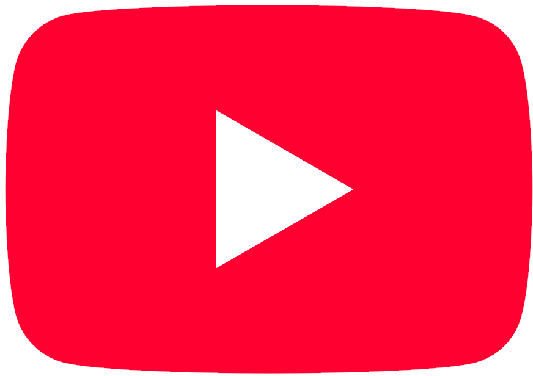
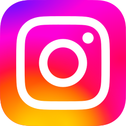
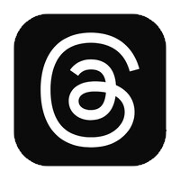

Social Media
| Media | Description | Status | Link |
|---|---|---|---|
 |
The main channel currently exists but is not active. However, the first projects for the channel are already in development. | Inactive | YouTube |
 |
The second channel is actively maintained. It features Ukrainian content with meme cats. | Active | YouTube |
 |
I currently run a blog on Instagram, but I’m planning to start publishing interesting comics soon. | Active | |
 |
On Threads, I post my original art, as well as holiday-themed art and channel updates. | Active | Threads |
| On X, I also post art; however, unlike Threads, this platform focuses on fan art and stories about regional and popular projects. I also share holiday-themed artwork and channel updates. | Active | X | |
| The Facebook page has not been created yet, but its creation is planned. It will feature animated releases of original alternate universes, which will also be published on YouTube. | Not created | - |